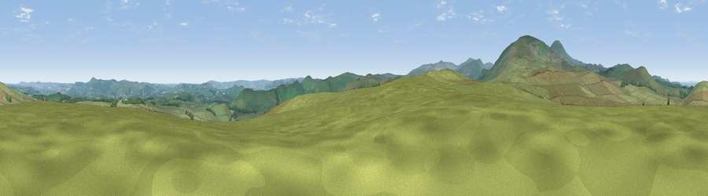

Viewpoint near Ingram
#9304 in England · top 36% of its area beats it · near Ingram · open accessWhere it is
The exact computed spot (NU 00475 18325). Click the marker for map links.
Public access: this spot lies on mapped open-access land (CRoW Act 2000) — you may roam here on foot. Computed from Natural England's CRoW access layer and OpenStreetMap rights of way — not the legal definitive map. Always verify locally.
The view, rendered

A 360° render of this exact spot computed from the terrain model, tree cover and land cover — summer colours, afternoon light, calibrated against photographs of famous viewpoints. Real trees, hedges and buildings will differ in detail.
The panorama
Grey silhouette: terrain skyline in each direction (720 bearings, Earth curvature and refraction included). Dashed green: skyline with trees (+15 m) and buildings (+8 m) as obstacles. Blue strip: how far the ground is visible on each bearing.
Where the view opens
Wedge length = distance to the farthest visible ground on that bearing (vegetation-aware). Rings at 10, 25 and 50 km.
What fills the view
88% grassland · 6% woodland · 6% cropland
Angular shares of the visible panorama (visual magnitude), not map area. Landscape diversity 0.21 (0–1 Shannon).
Key numbers
More beautiful places nearby
The staircase of upgrades: each row has a higher view potential than everything closer. Driving times are estimates from straight-line distance, calibrated against real road routing — check an actual route before setting out.
| Place | Direction | Drive | Score |
|---|---|---|---|
| Viewpoint near Ilderton | N · 2 km | ~5 min | 66.3 |
| Viewpoint near Ingram | W · 3 km | ~7 min | 80.5 |
| Viewpoint near Ingram | W · 3 km | ~8 min | 82.0 |
| Viewpoint c12396_7887 | WNW · 6 km | ~13 min | 85.7 |
| Viewpoint near Chillingham | NE · 10 km | ~20 min | 88.1 |
| Long Side | SW · 117 km | ~142 min | 89.5 |
| Viewpoint near Easington | SE · 123 km | ~147 min | 90.2 |
| The Knoll | S · 532 km | ~482 min | 91.0 |
55.45877, -1.99404 · source: screening · position refined by local search. Computed location — check access rights before visiting.